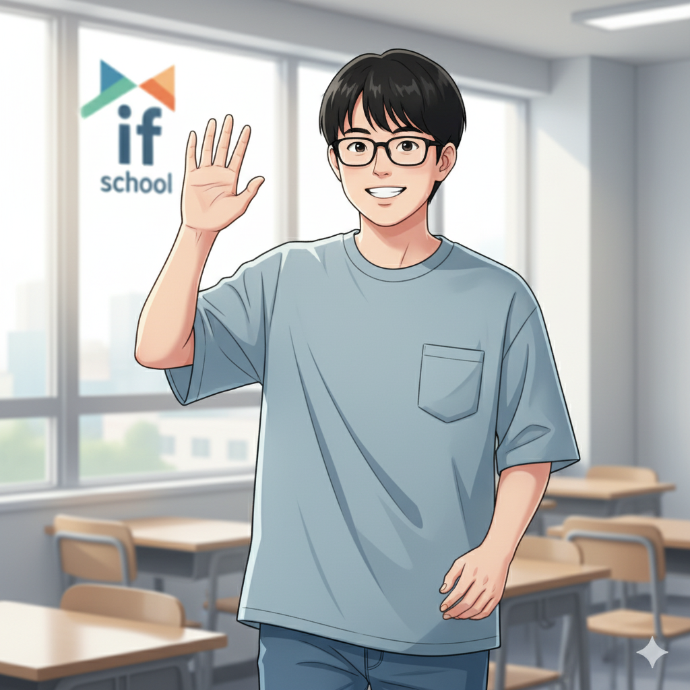

集中力こそ武器！Y君がストリートファイター6で見つけた才能 (Y君)
「気が散りやすい…」「落ち着きがない…」そう悩んでいたY君。高校生の時、if塾の塾頭と出会い、自分の特性が思わぬ才能に繋がることを知ります。それが、格闘ゲーム、特にストリートファイター6 (SF6) でした。
Y君は、一度ゲームを始めると、信じられないほどの集中力を発揮します。他の音が聞こえなくなるほど、画面に釘付けになり、対戦相手の動きを瞬時に見抜き、的確な判断を下します。その集中力と反応速度は、まさにeスポーツの世界で生きるために与えられた才能だったのです。
発達障害と診断されたY君にとって、学校生活は決して楽なものではありませんでした。しかし、ストリートファイター6 上達のために努力を重ね、持ち前の集中力を活かして、数々の大会で好成績を収めるまでに成長しました。今では、プロのeスポーツプレイヤーを目指し、日々練習に励んでいます。
Y君は言います。「最初は自信がなかったけど、SF6を通して、自分の強みを見つけられた。集中力は、僕にとっての才能なんだって」
塾頭との出会いが人生を変えた！才能を見つける場所、if塾 (塾頭, Y君)
Y君が才能を開花させた背景には、if塾の存在があります。塾頭は、Y君の集中力と反応速度にいち早く気づき、eスポーツの世界を勧めました。if塾では、Y君のような発達特性を持つ子どもたちが、自分の特性を活かせる場所を見つけ、才能を伸ばせるようにサポートしています。
塾頭は、Y君にこう伝えました。「君の集中力は、多くの人が持っていない素晴らしい才能だ。それを活かせる場所は必ずある。ストリートファイター6のような格闘ゲームの世界で、君は輝けるはずだ」
if塾では、AIやプログラミングなど、様々な分野で才能を伸ばすためのサポートも行っています。発達障害 プログラミングに興味を持つ子どもたちも多く、それぞれの興味や特性に合わせて、個別のカリキュラムを提供しています。
Y君は、if塾での出会いを通して、自分に自信を持つことができました。「塾頭に出会わなければ、今の僕はなかった。自分の才能を信じて、前に進む勇気をもらいました」とY君は語ります。
小さな成功体験の積み重ねが、大きな自信に繋がる (塾長, Y君)
if塾の塾長もまた、ADHD・ASDの診断を受け、中学時代は特別支援学級に通っていました。しかし、高校で塾頭と出会い、自身の経験を活かして後輩たちを支援しています。
塾長は言います。「小さな成功体験の積み重ねが、自信につながる。Y君がストリートファイター6で勝利を重ねるたびに、彼の表情はどんどん明るくなっていきました。自信を持つことで、彼はさらに成長し、新たな目標に挑戦する勇気を得ました」
if塾では、eスポーツだけでなく、様々な活動を通して、子どもたちの成功体験をサポートしています。例えば、プログラミング、イラスト、音楽など、それぞれの得意分野を活かしたプロジェクトに取り組み、達成感を味わえるように工夫しています。
Y君は、if塾での経験を通して、自分自身の成長を実感しています。「最初は、何もかもが不安だったけど、少しずつ成功体験を積み重ねることで、自信を持つことができました。今では、どんな困難にも立ち向かえる気がします」
自分の可能性を信じて、一歩踏み出そう！ (Y君)

もしあなたが、自分に自信が持てず、何をやってもうまくいかないと感じているなら、ぜひ一度、if塾に遊びに来てください。ここでは、あなたと同じように、様々な悩みや不安を抱える仲間たちが、それぞれの才能を活かして輝いています。
Y君は、最後にこうメッセージを送ります。「僕も最初は、自分の才能なんてないと思っていました。でも、ストリートファイター6に出会い、if塾の仲間たちに出会ったことで、自分の可能性を信じられるようになりました。あなたにも、きっと素晴らしい才能が眠っているはずです。諦めずに、一歩踏み出してみてください！」
if塾は、あなたの才能を見つけ、それを開花させるための場所です。私たちと一緒に、自分らしい成長の形を見つけませんか？
🎯 興味を持っていただいた方へ
if塾では、発達特性を持つ子どもたちの「好き」を「才能」に変える教育を行っています。現在の記事内容と実際の活動に大きなズレはありませんが、詳細については直接お問い合わせください。
📌 記事について
この記事は、塾頭による完全自動化への挑戦としてAIが自動生成しています。将来的には塾頭が執筆しているような記事になることを目指しており、現時点では事実と異なる内容が含まれる可能性があります。最新の正確な情報については、お問い合わせフォームよりご確認ください。
🤖 Generated with AI - if塾のブログ自動化プロジェクト